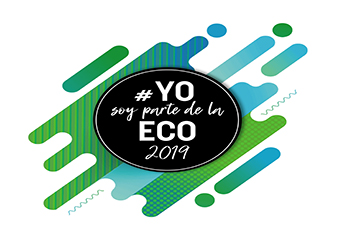
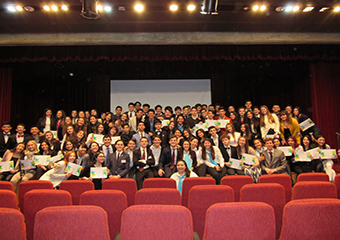

- Cuándo: Abril a Junio
- Universidad: UCA

- Nº de graduados: 75
- Colegios que participaron:Nuestra Señora de la Asunción, María Auxiliadora, San Miguel Arcángel, Padre José Margis, Verbo Encarnado, Sagrado Corazón, Los Ángeles, San Francisco Solano, San José, Sagrada Familia, Otros (UNR FcPolit RRII, Capitán Bermúdez).
- Proyectos realizados: 7
- Grupos Sonrisitas - Warriors in action - Humilis Anima - Hamingja - Atlas - Sujetos de ayuda - Los chicos del barrio.
- Resumen de proyectos:
-
(Sonrisitas): Remodelación de una de las salas del Jardín de infantes n° 232, ubicado en Casiano Casas 1001. Paralelamente con recolección de juguetes y de productos de higiene.
-
(Warriors in action): limpieza de una plaza ubicada en Fisherton, más colaboración con el Jardín de Infantes Nº 63 "Juana de Ibarbourou" que se encuentra en frente de la plaza.
-
(Humilis Anima): en una institución pública (Escuela Primaria N°61, y Escuela Juan Mantovani 436), la realización de una huerta con vegetales de crecimiento rápido. El grupo comenzó el proyecto y enseñó a mantener la huerta; al germinar los vegetales los individuos de la comunidad se llevaron lo sembrado. A este proyecto principal se le agregó la donación de plantines, con el objetivo de que la huerta también sea trasladada a las familias de la comunidad. Por otro lado, los individuos de la comunidad tuvieron una capacitación sobre cómo mantener el cuidado de la huerta.
-
(Hamingja): refacción de la capilla Virgen de la Granada, donde transcurren niños y adolescentes del barrio Villa La Granada. Además de ayudar con la remodelación de la misma, se llevaron donaciones para las meriendas y se realizó una jornada de lectura y actividades recreativas con la idea de pasar un momento agradable con cada uno de la comunidad y del barrio.
-
(Atlas): Pasar tiempo con los niños, adolescentes, jóvenes y adultos durante una tarde en un merendero de la ciudad. Además, ayudar observando las carencias que tiene el merendero para posteriormente subsanarlas o satisfacerlas.
-
(Los chicos del barrio): Se llevó a cabo una jornada deportiva en una escuela de Barrio Ludueña, más donación de elementos deportivos y de recreación a dicho establecimiento y se compartió una merienda con los chicos.
-
(Sujetos de ayuda): Restauración de un merendero y donaciones varias al mismo, ubicado en un barrio carenciado de Fisherton.
-
Disertantes: Juan Pablo Pezzetta, Santiago Sandoná, Hernán Shinji, Jimena Rosales, Julián Romero, Veteranos de Guerra de Malvinas Víctor Rodrígez y Raúl Gómez, Belén Volmare, Figuras políticas: Luis Contigiani, Agustina Bouza, Roy López Molina, Osvaldo Miatello, Josefina del Río, Germana Figueroa Casas, Juan Carlos Solís, Fabrizio Fiatti. Talleres: Luca Laboranti y Bruno Pereiro, Nazarena Shinji y Julián Badaui.
-
Coordinadores: General: Jimena Rosales. Grupos y colaboradores: Agustina Ipolitti, Nazarena Shinji, Daiana Sosa, Lucía Galliotiz, Rocío D’Angelo, Victoria Ambrosi, Bruno Pereiro, Ignacio Travaglino, Juan Schott, Julián Badaui, Luca Laboranti, Eugenio Castignani, Felipe Martínez, Lorenzo Pierotto, Martín Giufrida.